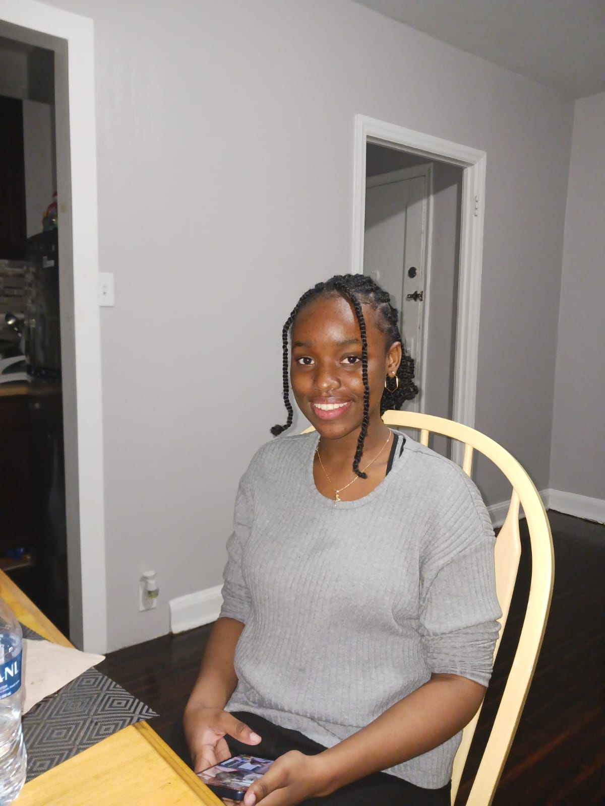

About Me
Hi, I'm Brehanna Sutherland, and welcome to my online showcase! This website is a personal project, a space where I'm excited to share the diverse skills I've been developing since starting college.
This journey began somewhat unexpectedly. What started as an end-of-term assignment for a college vlog quickly evolved into a passion project. Inspired to create a truly unique presentation for an English class, I decided to take on the challenge of building this website from scratch. With a bit of guidance from online tutorials, I dove into the world of web development, eager to see what I could create with my own hands.
Beyond the digital realm, I've also been exploring my creativity through the tangible art of clothes making. There's a certain confidence that well-fitting clothes can inspire, and that feeling has driven me to learn how to bring my own designs to life. Starting with bag making, I'm practicing and refining my skills, one stitch at a time, with the goal of eventually creating my own unique garments.
Finally, this space also celebrates my personal artistic journey. Beyond classroom assignments, I've been dedicating time to drawing, pushing my boundaries to see the level of detail and complexity I can achieve with each piece. It's a way for me to explore my imagination and visually document my growth as an artist.
This website is a testament to my willingness to learn, my passion for creative expression, and my drive to challenge myself. I invite you to explore my projects and witness my ongoing journey of skill development. Thank you for visiting!